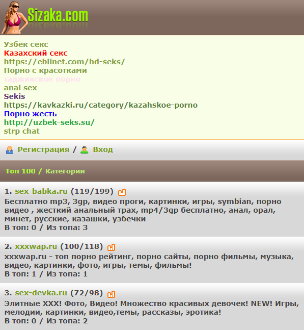

SAPE все больше скатывается и не приносит дохода. Сайт с ~12000 страниц, посещаемостью 5000 человек и ИКС 370 приносит в лучшем случае 40 рублей в день на формуле 2-2-1. Бывали года, когда сайт с гораздо меньшими показателями приносил в SAPE на той же формуле 170-180 рублей в сутки.
Что происходит в SAPE - непонятно. Но ясно одно: даже обычный HTML-сайт без JavaScript толком не может проиндексироваться. В логе индексации есть, например, такой раздел:
Страницы еще не проиндексировались
Наш робот уже знает об этих страницах и в скором времени проверит подходят ли они системе.
5317 страниц
Половина сайта се время болтается в таком состоянии. От переиндексакции к переиндексации практически ничего не меняется. Или вот еще раздел:
Страницы без установленного кода системы
На этих страницах наш код не установлен или его установка выполнена с ошибками. Проверьте корректность установки нашего кода, как описано в этом разделе, откорректируйте и закажите переиндексацию здесь.
3129 страниц
Четверть сайта, оказывается, не имеет кода системы. Хотя сайт имеет один-единственный шаблон, и, соответственно, код установлен везде. Обращение в техподдержку приводит лишь к тому, что специалисты SAPE подтверждают, что на указанных страницах код системы таки есть. Но сделать ничего не могут, кроме как отправить сайт на внеочередную переиндексацию. Которая завершается все с тем же результатом.
Поэтому пора уже искать другую площадку для монетизации сайта текстовыми ссылками. Интересно, удасться ли таковую найти?
Поиск площадок
Итак, в интернетах, в различных статьях по тематике "Биржи ссылок" упоминаются следующие альтернативные интернет-площадки:
Однако, по сей видимости, многие из этих сайтов либо прекратили свою работу, либо находятся в полурабочем состоянии. Понять, что происходит в индустрии SEO и найти актуальные ссылочные биржи можно через портал, именуемый в народе "Сёрч":
searchengines.guru
Ранее этот портал размещался на домене searchengines.ru, но начиная с какого-то времни этот домен перестал работать, и площадка полностью переехала в зону .guru.
Вот какие биржи ссылок были найдены вручную на этом портале.
miglinks.com
За приличным интерфейсом главной страницы скрывается дикая дичь. Портал принимает все сайты без разбора. И судя по статистике, основные тематики сайтов и рекламы следующие:
Казалось бы, ну ладно первые две катгории, с ними все понятно. Но вот "Каталоги, топы, web мастера" - что может находиться в этой категории? В худшем случае - информационные интернет-помойки? Как бы не так! Даже в этой категории сайты выглядят следующим образом:

Даже не знаю, кто все эти люди, которые размещают рекламу на этой бирже ссылок и кто эту рекламу публикует на своих сайтах.
linkfeed.ru
В 2008-2012 годах эта биржа могла составить некоторую альтернативу SAPE. Потом она периодически мелькала в обзорах, и кто-то с ней работал. На 2021 год, судя по форуму, биржей никто не пользуется уже несколько лет. Периодически в форум запрыгивают боты, и их спам никто не чистит. Иногда заблудают случайные пользователи, задают вопрос, который несколько лет болтается без ответа.
Однако в разделе новостей за 2021 год было аж две новости. И судя по ним, какая-то жизнь на этой бирже таки есть.